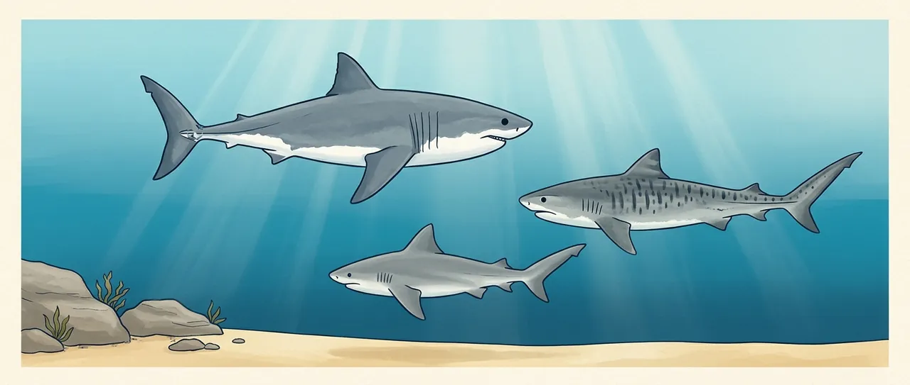
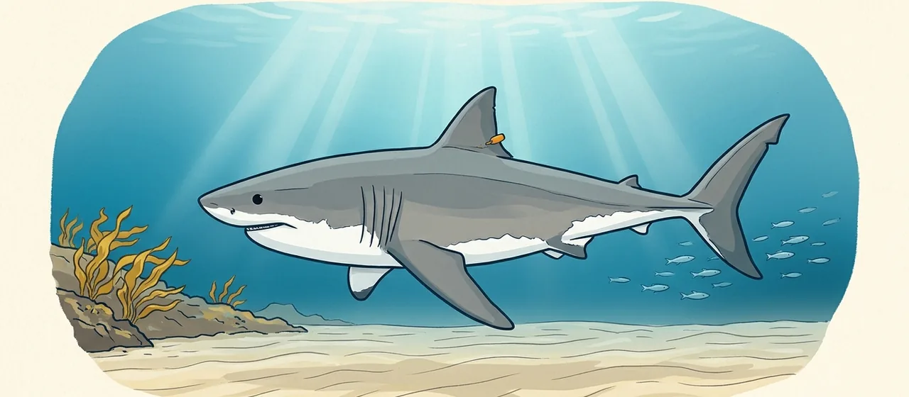

Sharks of Sydney
Which shark, where, and when. Three pages gather the tagging studies, the catch reports and the incident records for people who swim and dive in Sydney. This page is the way in, with the short version of each.
The three pages

White sharks off Sydney The shark of the open coast. Young ones pass Sydney twice a year, mostly in the cooler months. How big, how many, where they go and how often they meet people. Read the page → Bull sharks in the harbour
The summer visitor. Large adults come into the harbour and the rivers from November to May, and close to the beaches after heavy rain. When, where and why.
Read the page →
Do shark deterrents work?
Every independent field trial of the devices sold in Australia, shark by shark. Strong electric fields help; magnets and wax do not; no device has been tested on a swimmer.
Read the page →
Bull sharks in the harbour
The summer visitor. Large adults come into the harbour and the rivers from November to May, and close to the beaches after heavy rain. When, where and why.
Read the page →
Do shark deterrents work?
Every independent field trial of the devices sold in Australia, shark by shark. Strong electric fields help; magnets and wax do not; no device has been tested on a swimmer.
Read the page →
At a glance
| Shark | Where around Sydney | When | Size seen here | On record in Sydney |
|---|---|---|---|---|
| White shark | The open coast and ocean beaches. All 34 Sydney incidents were on the coast. | Cooler months: hooked off the beaches from May to November, rare from December to April. | About 2 m. All 32 hooked off Sydney were juveniles under 3 m. | 34 incidents, 13 fatal |
| Bull shark | The harbour, bays and rivers, and the beaches after heavy rain. 54 of 59 Sydney incidents were inside. | November to May, most in January and February. Absent July to October. | 2.2 to 3.2 m. Adults only. | 59 incidents, 32 fatal |
| Tiger shark | Offshore of the ocean beaches. The most common of the three on Sydney's drumlines. | Mostly January to March, and again in June. | Not gathered for these pages. | 2 incidents, both fatal, in the 1920s and 1940s |
Incidents are unprovoked cases in the Australian Shark-Incident Database to June 2026, all years on record, from Palm Beach to Cronulla with the harbour, Botany Bay and the rivers. Since 2000 the shark behind the most bites in Sydney has been the wobbegong, 12 of 39, none of them serious.
The year, shark by shark
Three records, one for each shark, each from the place where that shark is actually caught. White and tiger sharks are hooked on the SMART drumlines off Sydney's ocean beaches. Bull sharks have never been hooked there, so their row shows when the harbour's tagged sharks were caught.
White sharks hooked off Sydney's beaches
Bull sharks caught and tagged in the harbour
Tiger sharks hooked off Sydney's beaches
White and tiger sharks: SMART drumlines from Palm Beach to Cronulla, March 2022 to June 2025, 32 and 111 sharks (NSW DPIRD annual reports). Bull sharks: the 40 tagged in the harbour, 2009 to 2013 (Smoothey 2019); that row follows when the team fished as well as when the sharks were there. The three rows are drawn to their own scales, so compare the shapes and not the heights.
Winter and spring: white sharks
Young white sharks pass Sydney going north from April to June and south again from November. They are hooked off the beaches from May to November.
Summer and autumn: bull and tiger sharks
Warm water brings both. Bull sharks keep to the harbour, the rivers and the river-mouth beaches; tiger sharks to the open coast.
What the charts cannot say
How many sharks there are. A drumline counts the sharks that take a bait near it, in daylight, within a kilometre of the beach.
Sharks and people in Sydney
White, bull and tiger shark incidents by decade: Sydney's coast, harbour and bays
Each coloured block carries its count. The last row covers six and a half years. Cases before 1900 are counted in the line above the chart and not drawn. Species for the early cases were judged long afterwards. Source: Australian Shark-Incident Database, version of 2 Sep 2026; counted for these pages.
The pages summarise research and are not safety advice. Live alerts from drumlines, receivers and drones are on SharkSmart and in the SharkSmart app.